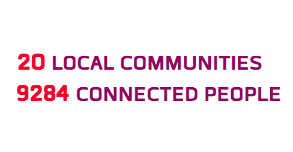

<div class="container-fluid mt-5">
  <div class="container box logos mx-auto d-block mt-3 mb-3">
    <!--Carousel Wrapper-->
    <mdb-carousel class="mb-5" [isControls]="true" [animation]="'slide'">
      <!--Slides-->
      <mdb-slide *ngFor="let slide of slides;">
        
        <div class="carousel-caption">
          <p>{{slide.desc}}</p>
        </div>
      </mdb-slide>
    </mdb-carousel>
    <div class="row mx-auto" class="mt-5">
      <p class="text-center">Systers is an international Anita B.org community encouraging the participation of all women involved in technology.
        <br>
        <br> We are committed to providing a friendly, safe, and welcoming environment for all, regardless of gender, sexual
        orientation, ability, ethnicity, socioeconomic status, work experience, or religion (or lack thereof).
        <br>
        <br> We believe in inclusivity, diversity, and transparency. We value open source citizenship and collaborative involvement.
      </p>
    </div>
    <div class="container-fluid justify-content-center mt-5">
      
      
    </div>
  </div>
</div>
